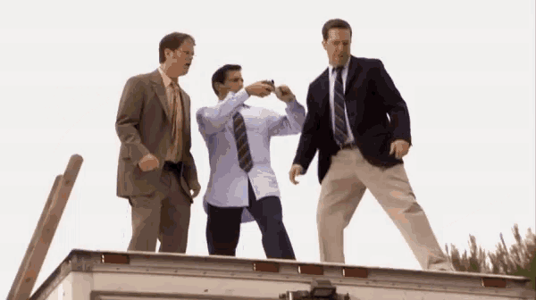
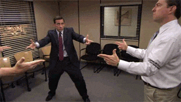

The Office
"People, paper, chaos."
The Office es una sitcom estadounidense que sigue el día a día de los empleados de Dunder Mifflin, una empresa dedicada a la venta de papel en Scranton, Pennsylvania. A través de un formato de falso documental, la serie retrata sus relaciones, conflictos y situaciones absurdas dentro y fuera de la oficina.


